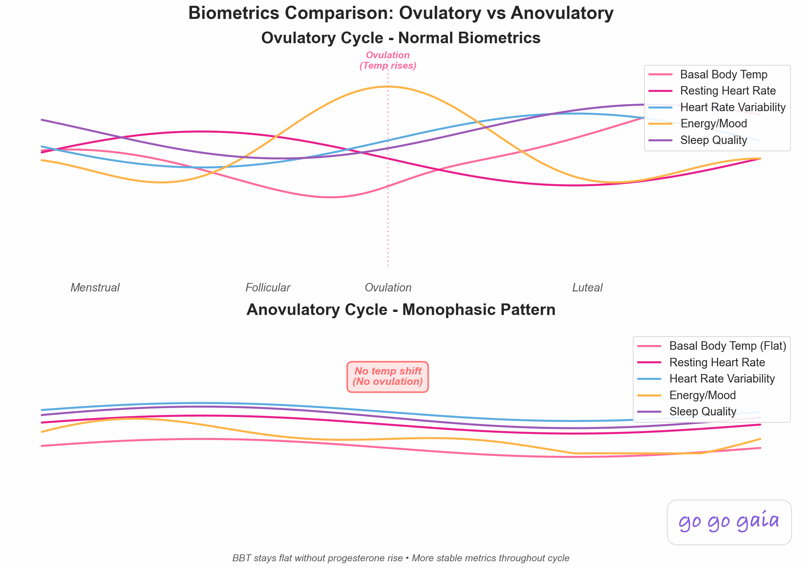

Best Ovulation Tracker App 2026: 5 Apps Compared for Finding Your Fertile Window
For reading test strips: Premom. For an FDA-authorized temperature method: Natural Cycles. For an easy general option: Flo. For free, detailed logging: Ovia Fertility. For LH, wearable temperature, and cervical mucus on one chart: Veya, free on iOS. Whichever you pick, pair an LH signal with a temperature check.
Quick Answer: Best Ovulation Tracker App?
Here is how the five compare by use case. None is ranked above the others:
- For reading ovulation test strips: Premom. Free strip reader that turns OPK photos into a numeric LH curve
- For an FDA-cleared, temperature-based option: Natural Cycles. Authorized by the FDA as a birth control app, works with Oura, Apple Watch, and Garmin
- For an easy general option: Flo. Simple predictions and a very large community
- For free detailed logging: Ovia Fertility. Extensive symptom and lifestyle tracking at no cost
- For all-in-one signal tracking (free): Veya. LH logging, wearable temperature, and cervical mucus in one chart, alongside sleep, mood, and nutrition
How We Picked These Apps
We shortlisted the 5 apps compared below from what women actually use for predicting ovulation and estimating it retrospectively, and finding their fertile window, and compared them on the criteria that matter most here: how well they predict the LH surge, whether they estimate ovulation after it likely happened, how they handle irregular cycles, and price. We checked each app's App Store listing (price, rating, privacy label, latest version) first-hand on October 16, 2026, along with its feature and pricing pages, and we read each app's current privacy policy rather than relying on its marketing pages.
Full disclosure: this site is published by Holland Neurotech Inc., the maker of Veya. The list isn't ranked — each app is presented as the fit for a specific need — we include our own app only where it genuinely belongs, and we say plainly when a competitor is the better choice.
Ovulation apps all promise the same thing: tell you when your fertile days are. But they get there in very different ways. Some do calendar math from your period dates. Some read photos of test strips. Some watch your temperature overnight. Some require a kit of tests that cost real money every month.
This guide covers which method each app uses, what each one honestly does well, what it costs, and which one fits your situation, whether your cycles are regular, irregular, or you're tracking with PCOS. If you want the biology first (what ovulation feels like, what cervical mucus changes mean), start with our guide on how to tell if you're ovulating and come back.
Full Transparency
This guide is published by Holland Neurotech Inc., the company behind Veya. We've compared each app based on its actual ovulation-tracking method, recent user reviews, and publicly available information, with pricing re-checked in October 2026. Every app here has real strengths, and the best one for you depends on your situation.
We included Veya because we think it's a strong option, but we'll be honest about what it doesn't do, including the one thing two other apps here clearly do better.
Medical Disclaimer
This article is for educational and informational purposes only and does not constitute medical advice. Ovulation tracking apps can help you understand your cycle, but no app can diagnose a fertility issue or replace assessment by a qualified healthcare provider. If you've been trying to conceive without success, have very irregular cycles, or have a condition like PCOS, endometriosis, or a thyroid disorder, please talk with your doctor or a fertility specialist. Apps used for pregnancy prevention have real failure rates, so discuss contraception choices with your healthcare provider. Individual results vary.
What makes ovulation tracking accurate?
Ovulation tracking is accurate when it pairs a predictor with a confirmer. An LH test flags the surge, and ovulation follows one to two days later; a sustained temperature shift confirms it afterward. Both signals matter because the fertile window is only about six days long.[1][3] Before comparing apps, it helps to know what "accurate" even means here. Landmark research published in the New England Journal of Medicine found that nearly all pregnancies came from intercourse during a 6-day window ending on ovulation day.[1] ACOG explains why: sperm can live inside your body for up to 5 days, while the egg survives about a day after release.[2]
So the question every app is really answering is: when does that 6-day window open? There are two halves to answering it well.
Predicting: The LH Surge
Luteinizing hormone (LH) surges shortly before ovulation. In a study of 53 women and 150 cycles, ovulation was confirmed by ultrasound one day after the serum LH surge in about half of cycles and two days after in about 43%.[3] That's the signal ovulation test strips (OPKs) detect. A positive LH test is a useful advance warning, which makes it a key signal if you're trying to conceive. Cervical mucus changes (clear, stretchy, egg-white texture) also predict, usually a few days ahead.
Confirming: The Temperature Shift
After ovulation, progesterone raises your resting body temperature slightly, and it stays elevated until your next period. In a retrospective study of 1,501 cycles (run by the Natural Cycles team), the temperature-based estimate of ovulation arrived on average 1.9 days after the first positive ovulation test.[6] A sustained temperature rise is how you know ovulation actually happened, not just that it was supposed to. This matters more than people expect, because some cycles are anovulatory (no egg is released), especially with PCOS, after stopping birth control, during high stress, or approaching perimenopause.

Here's the central point of this whole comparison: ovulation tracking works best when it combines an LH signal that predicts ovulation with a temperature shift that confirms it. Calendar predictions alone are usually the least precise method, because ovulation timing moves around even in regular cycles. Each app below leans on a different mix of these signals, and that's the main thing that separates them.
Then Ask Yourself Three Questions
- Are your cycles regular? If yes, almost any method works reasonably well. If no, calendar-based predictions will frustrate you, and hormone or temperature signals become essential.
- How much daily effort feels sustainable? Test strips mean testing most days mid-cycle. Wearable temperature tracking happens while you sleep. Calendar apps need nothing but your period dates. Be honest about what you'll keep doing for 3 months.
- What's your budget? The options below range from completely free to a subscription plus hardware that totals several hundred dollars a year.
Which ovulation tracker fits which need?
Premom suits LH strip scanning, Natural Cycles temperature-based tracking, Flo easy logging, Ovia free detailed logging, and Veya combining ovulation signals with sleep and wearable data. As of October 2026 the App Store lists Natural Cycles at $149.99 a year, Veya Pro at $49.99 a year, Premom Premium from $12.99 to $37.99, and no in-app purchases for Ovia.[7] See also Premom vs Flo.
For Reading Ovulation Test Strips: Premom
Best if you want: your phone to read your ovulation test strips and chart the results for you.
Key Features
- Photo-based OPK reader: snap a picture of any test strip and the app assigns a numeric LH value
- Quantitative LH curve charts that show your hormone progression across the cycle
- BBT and cervical mucus logging
- Period and cycle tracking with ovulation predictions
- Works with Easy@Home and Premom brand test strips (and reads most others)
Strengths
- The strip reader is free and easy to use. Instead of squinting at two lines wondering if one is "dark enough," you get a number
- The numeric LH curve is especially useful with PCOS or irregular cycles, where your absolute LH pattern tells you more than a single positive or negative result
- Charts make it easy to see your surge building across several days of testing
- Cross-platform (iOS and Android)
Limitations
- Privacy history worth knowing: in 2023, Easy Healthcare (Premom's maker) agreed to a $100,000 FTC civil penalty plus $100,000 to Connecticut, the District of Columbia, and Oregon over sharing users' health data with third parties, including Google, AppsFlyer, and two China-based analytics firms, without consent. The FTC order now bars Premom from sharing health data for advertising and requires consent for other sharing[4]
- Predictions lean on you testing consistently. The app is at its best when you're using strips most days mid-cycle
- Test strips are an ongoing cost, and the app naturally steers you toward its own brand
- No nutrition, sleep, or broader health tracking
Who Should Choose This
Premom is ideal if you:
- Already use (or plan to use) ovulation test strips regularly
- Want numeric LH values instead of eyeballing line darkness
- Have PCOS or irregular cycles and want to see your full LH curve
- Want a free app and don't mind the cost of strips
Pricing: Free, including the strip reader. An optional Premium subscription is sold as an in-app purchase (its App Store listing shows several Premium price points, from $12.99 to $37.99 as of October 2026, so check current pricing in the app). The listing shows 4.8/5 from about 60K ratings.[7] Test strips are sold separately and prices vary by brand and pack size.
Download: Available on iOS and Android via premom.com
For FDA-Cleared Temperature Tracking: Natural Cycles
Best if you want: a clinically validated, temperature-based system, especially if you already wear an Oura Ring or Apple Watch.
Key Features
- FDA-cleared algorithm. The FDA announced in 2018 that it was allowing Natural Cycles to be marketed as an app for preventing pregnancy, and the FDA's birth control guide still lists a software app for contraception. The agency says about 7 to 8 of 100 women using such an app to avoid unprotected sex on fertile days may get pregnant in a year[5][8]
- Ovulation detection from basal body temperature, with optional LH test logging
- Works hands-off with the NC° Band, Oura Ring, Apple Watch (Series 8 and later), or Garmin
- Daily fertility status: green (not fertile) or red (use protection / fertile day)
- Doubles as a non-hormonal birth control method when used to prevent pregnancy
Strengths
- The FDA authorization is real, and it is for preventing pregnancy. The other apps on this list don't make contraceptive claims
- With a compatible wearable, tracking is genuinely passive: wear it to sleep and the data shows up
- One subscription covers both planning and preventing pregnancy, which is useful if your goals change
- FSA/HSA eligible in the US
Limitations
- Paid only. There's no free tier, just a trial period
- Temperature only estimates ovulation retrospectively, after it likely happened. For predicting fertile days ahead of time, the algorithm relies on your cycle history, so it gives less advance warning than LH testing in your first months of use
- Needs consistent daily temperature data. Disrupted sleep, travel, and irregular schedules degrade the data
- Temperature-based methods are harder to read when cycles are irregular or ovulation doesn't happen, so it can be a weaker fit for PCOS
- Costs add up: the subscription plus a wearable (an Oura Ring Gen3 or later also needs an Oura Membership, per Natural Cycles' FAQ) can be the costliest path on this list
Who Should Choose This
Natural Cycles is ideal if you:
- Want a clinically validated method rather than an informal tracker
- Already own an Oura Ring, newer Apple Watch, or Garmin
- Want one system that can switch between preventing and planning pregnancy
- Have fairly regular cycles and a consistent sleep routine
Pricing: Subscription only: $21.99 per month or $149.99 per year as of October 2026, per the App Store listing, which says the annual plan comes with a free NC° Band. It is rated 4.8/5 from about 30K ratings.[7] Wearables cost extra, and prices can change, so check naturalcycles.com for current rates.
Download: Available for iOS and Android via naturalcycles.com
For Simple, Popular Tracking: Flo
Best if you want: the easiest possible start, with predictions that improve as you log and a very large community of users.
Key Features
- Period and ovulation predictions from your logged cycle data
- Symptom, mood, and discharge logging
- LH test result logging (manual)
- Large educational content library and AI chatbot
- Anonymous Mode for logging without personal identifiers
Strengths
- One of the largest user bases of any cycle app (its App Store listing cites over 570 million downloads worldwide as of July 2026)[7], with a big community and content library
- Very low effort: log your periods and a few symptoms and the predictions handle the rest
- Anonymous Mode is a genuinely useful privacy feature for sensitive health data
- Cross-platform (iOS and Android)
Limitations
- Ovulation is predicted from cycle history, not confirmed. The predictions are calendar/algorithm estimates and are less reliable for irregular cycles
- No wearable temperature integration for ovulation confirmation
- Privacy history worth knowing: a 2021 FTC settlement over sharing health data with Facebook and Google[9]. Flo has since added Anonymous Mode
- Much of the educational content and detailed insights sit behind the Premium paywall
Who Should Choose This
Flo is ideal if you:
- Have regular cycles and want a low-effort estimate of your fertile window
- Are early in trying to conceive and not ready for daily testing
- Want lots of articles and a community alongside tracking
- Need an Android option
Pricing: Free (limited features). Flo Premium is a paid subscription; the App Store listing shows Premium tiers of $47.99 and $59.99, without billing-period labels, plus an ovulation-focused subscription at $9.99 (as of October 2026), and offers vary. It is rated 4.7/5 from about 2 million ratings.[7]
Download: Available on iOS and Android
For Detailed Free Logging: Ovia Fertility
Best if you want: to log a lot of detail, every day, without paying anything.
Key Features
- Extensive symptom and lifestyle logging (cervical mucus, BBT, mood, sleep, exercise, nutrition notes)
- Proprietary fertility score and fertile window prediction
- Manual LH and pregnancy test logging
- Educational content and tips
- Companion pregnancy and parenting apps for later stages
Strengths
- Most features are free
- Built for detail-oriented people: if you want to log everything, Ovia has a field for it
- The fertility score gives a single daily number, which some people find motivating
- Cross-platform (iOS and Android)
Limitations
- Data sharing worth knowing: Ovia is also offered through employers and health plans (its App Store listing says so)[7], and health data can flow into workplace wellness programs. The privacy policy is long and worth reading before you sign up through an employer
- The fertility score system can feel complex compared with a simple fertile window
- No wearable temperature integration for ovulation confirmation
Who Should Choose This
Ovia Fertility is ideal if you:
- Want detailed daily logging without a subscription
- Like having a single daily fertility score to act on
- Are using your personal account, not an employer-sponsored one, or are comfortable after reading the privacy policy
- Need an Android option
Pricing: Free; the App Store lists no in-app purchases and rates it 4.8/5 from about 91K ratings (as of October 2026).[7]
Download: Available for iOS and Android via oviahealth.com
For All-in-One Signal Tracking: Veya
Best if you want: LH results, wearable temperature, and cervical mucus on one chart, next to the sleep, stress, and nutrition patterns that affect your cycle.
Key Features
- Manual LH test logging with your fertile window updated as you log
- Basal body temperature pulled automatically from Apple Watch, Oura Ring, or Garmin[7]
- Cervical mucus and ovulation symptom logging
- Fertile window prediction that improves as your data builds
- Sleep, mood, nutrition, and fitness tracking in the same app
- Correlation insights that connect lifestyle factors to your cycle
- Doctor-ready data export
- Pregnancy mode, so the app transitions with you when you conceive

Strengths
- Covers both halves of accurate tracking: LH logging for prediction and wearable temperature for confirmation, in one free app
- Wearable integration means temperature gets tracked while you sleep, no separate thermometer routine
- Shows the lifestyle context (sleep, stress, nutrition) that other ovulation apps leave out
- No app switching when you get pregnant, your history carries over
- No ads, no data selling
Limitations
- iOS only. No Android version yet
- No built-in OPK photo reader. You log LH results manually rather than the app reading a strip photo, which Premom handles for you
- Newer app with a smaller community than the established options here
Who Should Choose This
Veya is ideal if you:
- Want to combine LH tests, temperature, and mucus signals instead of relying on one
- Already wear an Apple Watch, Oura Ring, or Garmin
- Want to see how sleep, stress, and nutrition line up with your cycle
- Plan to keep tracking through pregnancy if you conceive
Pricing: Free (core features including LH logging, temperature, and fertile window prediction), Premium $9.99/month or $49.99/year for AI insights and advanced correlations (App Store listing, as of October 2026).[7]
Download: Available on iOS App Store
Worth Noting: At-Home Hormone Monitors and Wearables
A growing category sits between test strips and lab work: hardware that measures your hormones or temperature directly and pairs with its own app. These cost more than any app on this list, but they're worth knowing about if you want lab-style data at home:
- Mira measures actual hormone concentrations (estrogen, LH, progesterone, and FSH on some kits) from urine using a small reader. Quantitative numbers, not lines. Kits and pricing vary, so check the maker's site. We checked what it lists for Apple Health in does Mira sync with Apple Health?
- Inito measures estrogen, LH, PdG (a progesterone marker), and FSH on a single strip read by a device that attaches to your phone. Check the maker's site for current models and pricing. See does Inito sync with Apple Health? for what transfers to your phone's health data.
- Oova tests LH and PdG with lab-quality results and is designed to share data with your clinician, which makes it popular in fertility clinic settings.
- Tempdrop is a wearable BBT armband you wear overnight. It filters out disturbed sleep and reports its own accuracy figures, which we have not verified. Check the maker's site for pricing.
How do the 5 ovulation trackers compare side by side?
The main differences are method and cost. Premom reads strips, Natural Cycles uses temperature on a subscription, and Flo and Ovia log from symptoms and cycle history; on the App Store they carry 4.8/5 from about 60K, 4.8/5 from about 30K, 4.7/5 from about 2 million, and 4.8/5 from about 91K ratings respectively (October 2026). Here's how the 5 apps stack up on the things that matter most for ovulation tracking:
| Feature | Premom | Natural Cycles | Flo | Ovia Fertility | Veya | |
|---|---|---|---|---|---|---|
| Prediction Method | LH curve | BBT algorithm | Calendar/algorithm | Calendar + logged signs | LH + BBT + mucus | |
| Reads OPK Strip Photos | ✅ Yes, with numeric LH | ❌ | ❌ Manual logging | ❌ Manual logging | ❌ Manual logging | |
| Manual LH Logging | ✅ Yes | ✅ Yes | ✅ Yes | ✅ Yes | ✅ Yes | |
| BBT / Temperature Tracking | ✅ Manual | ✅ Core feature | ⚠️ Manual, basic | ✅ Manual | ✅ Via wearable | |
| Wearable Integration | ❌ | ✅ NC° Band, Oura, Apple Watch, Garmin | ⚠️ Basic | ❌ | ✅ Apple Watch, Oura, Garmin | |
| Cervical Mucus Tracking | ✅ Yes | ⚠️ Optional | ✅ Yes | ✅ Yes | ✅ Yes | |
| Estimates Ovulation Retrospectively (vs Only Predicts) | ⚠️ If you log BBT | ✅ Core feature | ❌ Predicts only | ⚠️ If you log BBT | ✅ Via temperature | |
| Works for Irregular Cycles | ✅ LH curve helps | ⚠️ Best with regular cycles | ❌ Calendar-based | ⚠️ Limited | ⚠️ Better with LH + BBT | |
| Requires Hardware / Test Kits | ⚠️ Strips needed | ✅ Thermometer or wearable | ❌ None | ❌ None | ⚠️ Wearable optional | |
| Nutrition / Sleep / Mood Tracking | ❌ | ❌ | ⚠️ Mood + symptoms | ✅ Logged manually | ✅ All three | |
| Doctor Data Export | ✅ Reports | ⚠️ Limited | ⚠️ Limited | ⚠️ Limited | ✅ Free | |
| Privacy Practices | ⚠️ 2023 FTC order | Read the policy | ⚠️ 2021 FTC, has Anonymous Mode | ⚠️ Employer programs | ✅ No data selling | |
| Free Tier Quality | ✅ Strip reader free | ❌ No free tier | ⚠️ Limited + ads | ✅ Most features free | ✅ Generous | |
| Price | Free + strips | $149.99/yr or $21.99/mo | Free, paid premium | Free | Free, $9.99/mo premium | |
| Best For | All signals in one | Strip reading | FDA-cleared method | Test accuracy | Easiest start | Free detail |
How do you choose between these five apps?
Choose by the signal you will log. Strip testers fit Premom, wearable owners who want an FDA-authorized method fit Natural Cycles (De Novo DEN170052), people who want free logging detail fit Ovia, and Flo is the easiest on-ramp with the largest rating base. Veya fits if you want ovulation signals next to sleep, stress and nutrition. Here's the bottom line for each app:
Choose Premom if:
- You're testing with OPK strips and want them read and charted automatically
- You want a numeric LH curve rather than interpreting line darkness
- You have irregular cycles or PCOS and want to see your actual hormone pattern
Choose Natural Cycles if:
- You want an FDA-cleared, clinically validated method
- You already wear an Oura Ring, newer Apple Watch, or Garmin
- You want one system for both preventing and planning pregnancy
- Your cycles are reasonably regular
Choose Flo if:
- Your cycles are regular and you want a low-effort estimate
- You're early in trying to conceive and not ready for daily testing
- You want a big community and content library alongside tracking
Choose Ovia Fertility if:
- You want detailed daily logging completely free
- You like a single daily fertility score
- You've read and are comfortable with its data practices
Choose Veya if:
- You want LH tests, wearable temperature, and cervical mucus on one chart
- You want sleep, stress, and nutrition tracked alongside your cycle
- You're on iOS and want a free app that transitions to pregnancy mode if you conceive
Which ovulation apps have privacy history worth knowing?
Two apps here have regulator-documented privacy history: Premom agreed in 2023 to a $100,000 FTC civil penalty plus $100,000 to three jurisdictions over sharing health data, and Flo's 2021 FTC order covers sharing with outside analytics firms, with a $59.5 million class settlement hearing set for October 29, 2026. Fertility data is some of the most sensitive health data there is. It can reveal when you're trying to conceive, when you're pregnant, and when you're not anymore. Here's what's worth knowing for each app:
- Premom reached a 2023 settlement with the FTC and three jurisdictions ($100,000 FTC civil penalty plus $100,000 to Connecticut, the District of Columbia, and Oregon) over sharing users' health data with third parties without consent, including Google, AppsFlyer, and two China-based analytics firms. The settlement order now bars Premom from sharing health data for advertising and requires consent for any other sharing.[4] The order changed the company's practices, but the history is part of an informed decision.
- Flo settled with the FTC in 2021 over sharing health data with Facebook and Google. The order the FTC finalized that June required user consent for sharing and an independent privacy review.[9] It has since added Anonymous Mode, which lets you use the app without tying data to your identity.
- Ovia offers employer-sponsored versions where aggregated health data can flow into workplace wellness programs. If your access comes through work, read what's shared before logging.
- Natural Cycles: we did not review its policy line by line, so read it before signing up. Natural Cycles is based in Sweden and subject to EU privacy law.
- Veya doesn't sell data and doesn't run ads. Your data stays your own, and you can export or delete it.
Whatever app you choose, it's worth two minutes to check: does it sell or share data with advertisers, can you use it anonymously, and can you delete your data completely?
How do you get useful data from an ovulation tracker?
Pair one predictor with one confirmer, log at consistent times, and give it two to three cycles. In the Natural Cycles authors' study the temperature-based estimate of ovulation came 1.9 days after the first positive LH test, which is why using both signals together is useful.[6] A few habits make tracking dramatically more useful:
- Give it 2 to 3 cycles before judging. Every method needs baseline data. The first cycle is calibration, not results.
- Combine a predictor with a confirmer. LH tests or mucus changes tell you the window is opening. A temperature shift tells you ovulation actually happened. Together they cover each other's blind spots.
- Log even the boring days. Negative LH tests and "nothing happening" days are data. The contrast is what makes your surge visible.
- Don't move your testing window around. If you're using strips, test at roughly the same time each day. LH levels swing within a day, and consistency keeps results comparable.
- Note disruptions. Illness, travel, terrible sleep, and high stress can shift ovulation or muddy temperature data. A quick note saves you from misreading the chart later.
- Bring your chart to your doctor if something looks off. Flat temperatures every cycle, never catching a surge, or wildly variable cycle lengths are all worth a conversation, and a chart makes that conversation concrete.
Pro Tip
If you want a quick estimate of your fertile window while your tracking data builds, our free ovulation calculator gives you a starting point from your last period date. Just remember it's calendar math, the least precise method here. Use it to know when to start testing, not as the final answer.
Frequently Asked Questions
How much do ovulation tracker apps cost in 2026?
On the App Store in October 2026, Natural Cycles is subscription-only at $21.99 a month or $149.99 a year, Veya Pro is $9.99 a month or $49.99 a year, Flo Premium is listed at $47.99 and $59.99 without billing-period labels, and Premom Premium plans range from $12.99 to $37.99. Ovia lists no in-app purchases. Test strips and kits are an extra cost. See Premom vs Flo and Clue vs Natural Cycles for matchups.
Can an ovulation tracker app be used as birth control?
Only an app authorized for contraception is meant for that use. Natural Cycles received FDA De Novo authorization (DEN170052) as a birth control app in 2018, and the FDA lists software applications for contraception with about 7 to 8 of 100 women becoming pregnant in a year of typical use. Apple states its cycle-tracking ovulation estimates should not be used as birth control. Other apps here are tracking tools. Details: FDA birth control guide, Apple Cycle Tracking instructions for use.
What's the most accurate way to track ovulation?
Combining two signals: an LH test that predicts ovulation is coming, and a temperature shift that confirms it happened. A positive LH test usually means ovulation is a day or two away. Basal body temperature rises slightly after ovulation and stays elevated, which confirms it actually occurred. Apps that handle both signals, through LH logging plus a wearable or thermometer, give you prediction and confirmation on the same chart. A calendar estimate alone is the least reliable method because ovulation timing shifts from cycle to cycle.
Do I need ovulation test strips or is an app enough?
It depends on your cycles and your goal. If your cycles are regular and you just want a rough sense of your fertile window, an app's calendar predictions are a reasonable starting point. If you're actively trying to conceive, test strips add real hormonal data. LH strips are relatively inexpensive, and a positive result usually means ovulation is a day or two away, which is far more precise than a date estimate. If your cycles are irregular, date-based predictions are often wrong, and strips or temperature data matter much more. Our guide on how accurate period tracker apps really are goes deeper on this.
What's the best ovulation app for irregular cycles or PCOS?
Calendar predictions struggle most with irregular cycles, so look for apps that work from hormone or temperature signals instead of dates. Premom's quantitative LH readings can help because they show your actual LH curve rather than a single positive or negative, though PCOS can raise baseline LH and make strip results harder to interpret. Temperature tracking (a wearable or daily basal thermometer) shows whether ovulation actually happened, which matters when cycles are unpredictable. Temperature-based methods are harder to read when cycles are irregular. If PCOS is the bigger picture, see our comparison of the best PCOS tracking apps, and talk with your doctor if you're not seeing ovulation signs at all.
Can an app predict ovulation from my period dates alone?
Only roughly. Calendar math assumes ovulation lands about 14 days before your next period, but the real timing shifts with stress, sleep, illness, and travel, even in otherwise regular cycles. That's why date-only predictions are best treated as a starting point that tells you when to begin testing or watching for body signs, not as the answer itself.
What's the difference between predicting and confirming ovulation?
Prediction tells you ovulation is coming. Confirmation tells you it happened. LH tests and cervical mucus changes predict, because they show your fertile window opening. A sustained temperature rise confirms, because progesterone released after ovulation raises your resting temperature. If you're trying to conceive, prediction matters most, since your fertile days come before ovulation. If you want to know whether your cycles are ovulatory at all, confirmation is the more important half. (And yes, this matters for timing too: see can you get pregnant on your period? for why the window's edges surprise people.)
Are free ovulation tracker apps accurate?
A free app is as accurate as the data you give it. Free calendar predictions are estimates and can miss by days. But free apps that let you log LH tests, temperature, and cervical mucus are working from your body's actual signals, which is what accuracy really comes from. Premom's strip reader and Veya's signal logging are both free. Paid options mostly add convenience and validation, like automatic wearable syncing, or an FDA-authorized birth control algorithm, rather than fundamentally different information.
So which ovulation tracker should you use?
The honest answer is that the best ovulation tracker isn't really an app. It's a method: pair a signal that predicts ovulation (LH tests or cervical mucus) with one that confirms it (temperature), and give it 2 to 3 cycles. Every app here is a different way of making that method easier to live with.
If you're a strip tester, Premom is built around reading them and charting the result. If you want clinical validation and own a wearable, Natural Cycles has FDA authorization as a birth control app. Flo is the easiest on-ramp, Ovia offers a lot of free logging detail, and Veya is an option if you want these signals, plus the sleep, stress, and nutrition context around them, in one free app that follows you into pregnancy. If you're also weighing broader trying-to-conceive features, our fertility tracking app comparison covers that wider picture.
Whichever you pick, start now rather than perfectly. Two cycles of real data beats two more weeks of research.
Your fertile window is about 6 days. The job is finding it.
ACOG puts it plainly: sperm survive up to 5 days, the egg survives about one. An LH test predicts when that window opens, and a sustained temperature shift is a retrospective sign that ovulation likely happened. Track both for a few cycles and you'll know your own pattern instead of a textbook average.
Most people can see their own LH and temperature pattern by the end of the second cycle.
Related Articles
- How to Tell If You're Ovulating
- How Accurate Are Period Tracker Apps?
- Can You Get Pregnant on Your Period?
- What is the Luteal Phase? Symptoms, Length & Pregnancy
Other App Comparisons
- Flo vs Natural Cycles: Which One Should You Use?
- Premom vs Flo
- Clue vs Natural Cycles
- Best Pregnancy App 2026: 6 Apps Compared
- Best Fertility Tracking App 2026: 8 Apps Compared for TTC
- Best PCOS Tracking App 2026: 7 Apps Compared
- Best IVF Tracking App 2026: 5 Apps Compared
- Best Egg Freezing Tracking App 2026: 6 Apps Compared
- How to Choose a Period Tracker App
References
- Wilcox AJ, Weinberg CR, Baird DD. Timing of Sexual Intercourse in Relation to Ovulation: Effects on the Probability of Conception, Survival of the Pregnancy, and Sex of the Baby. New England Journal of Medicine. 1995;333(23):1517-1521. doi:10.1056/NEJM199512073332301
- American College of Obstetricians and Gynecologists (ACOG). Fertility Awareness-Based Methods of Family Planning. Source for the egg surviving about 24 hours and sperm up to 5 days. acog.org
- Behre HM, et al. Prediction of ovulation by urinary hormone measurements with the home use ClearPlan Fertility Monitor: comparison with transvaginal ultrasound scans and serum hormone measurements. Human Reproduction. 2000;15(12):2478-2482. 53 women, 150 cycles. PubMed
- Federal Trade Commission. Ovulation Tracking App Premom Will be Barred from Sharing Health Data for Advertising, Under Proposed FTC Order. May 17, 2023. Settlement with Easy Healthcare Corporation, $100,000 FTC civil penalty plus $100,000 to Connecticut, the District of Columbia, and Oregon. ftc.gov
- FDA. Birth Control: software application for contraception, including the 7 to 8 in 100 one-year pregnancy figure. Natural Cycles FAQ: supported wearables (NC° Band, Oura, Apple Watch Series 8+, Garmin) and FSA/HSA reimbursement. fda.gov/consumers/womens-health-topics/birth-control and naturalcycles.com/faqs
- Berglund Scherwitzl E, Lindén Hirschberg A, Scherwitzl R. Identification and prediction of the fertile window using NaturalCycles. European Journal of Contraception & Reproductive Health Care. 2015;20(5):403-408. 1,501 cycles from 317 women; authors are affiliated with Natural Cycles. PubMed
- Apple App Store listings for Veya, Natural Cycles, Premom, Flo, and Ovia (prices, wearable support, download figure), viewed October 9, 2026. apps.apple.com (also Flo, Premom, Veya, Ovia)
- STAT News. FDA clears Natural Cycles app, the first app to prevent pregnancy. August 10, 2018. statnews.com
- Federal Trade Commission. Developer of Popular Women's Fertility-Tracking App Settles FTC Allegations that It Misled Consumers About the Disclosure of their Health Data. January 13, 2021; order finalized June 22, 2021. ftc.gov